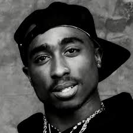
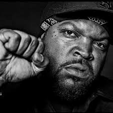
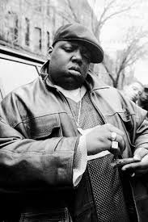

 Figura del rap de los años 90, artista muy polémico, emblema del estilo "gangsta" y con una vida frenética de principio a fin, la muerte de Tupac Shakur, de la que se cumplen veinte años, lo convirtió en un héroe caído y una leyenda para el hip-hop estadounidense. Un tiroteo ocurrido el 7 de septiembre de 1996 en Las Vegas, que causaría su muerte seis días después, cuando tenía 25 años, puso el punto y final a la carrera de un rapero rompedor y con un indudable talento para las rimas, pero también muy controvertido y con innumerables problemas con la ley.
 O'Shea Jackson, conocido artísticamente como Ice Cube, nació en South Central, Los Ángeles, California, 15 de junio de 1969 Comenzó su carrera como miembro del polémico grupo de Gangsta rap N.W.A., y posteriormente lanzaría su exitosa carrera en solitario en la música y en el cine. En los últimos años, su carrera como actor ha sido el centro de su vida, aunque no ha descuidado para nada el rap. Está considerado como uno de los iconos y figuras más influyentes en la industria del hip hop, particularmente por su rap intrépido y enfadado, y por tocar temas políticos y raciales en sus letras. Ha vendido más de 12 millones de copias por todo el mundo.
 Christopher George Latore Wallace nació el 21 de mayo de 1978 en Brooklyn Nueva York, mejor conocido por sus sobrenombres The Notorious B.I.G, Biggie, Biggie Smalls. Era un rapero americano, considerado uno de lo más influyentes de la historia del rap. Wallace un excelente alumno, ganando varios premios como estudiante de inglés. Empezó a traficar droga alrededor de los doce años, algo de lo que su madre no se enteró hasta la adultez de Christopher, ya que llegaba muy tarde a la casa. A los 17 años dejo los estudios y se involucró por completo en su vida criminal. En 1989 fue arrestado por posesión de armas y sentenciado a 5 años de libertad condicional. En 1991 lo arrestaron por venta de cocaína y crack, y paso 9 años en prisión hasta que pago la fianza.